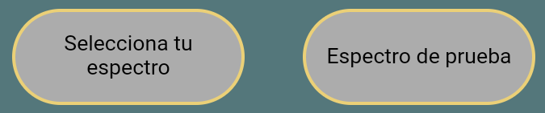
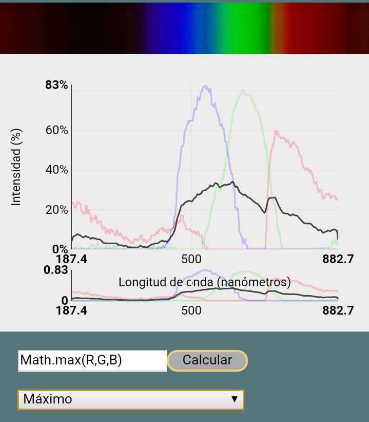
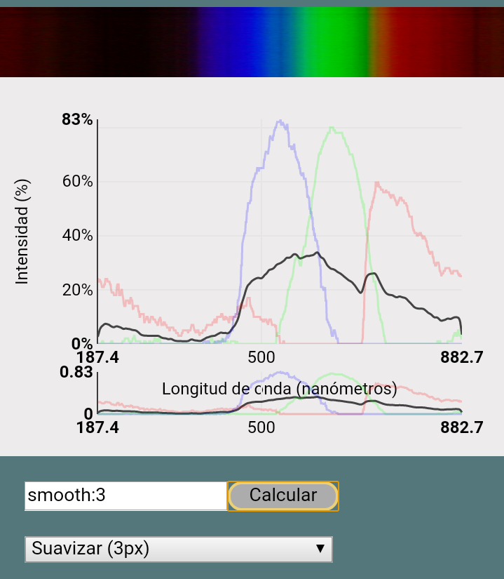
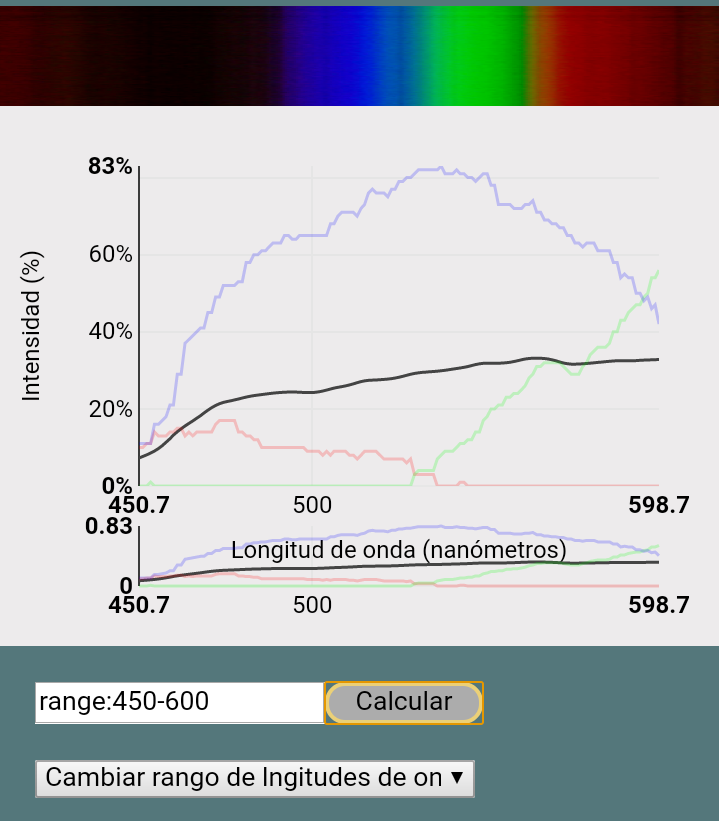
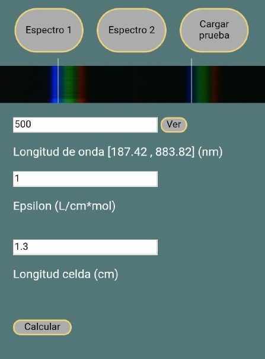
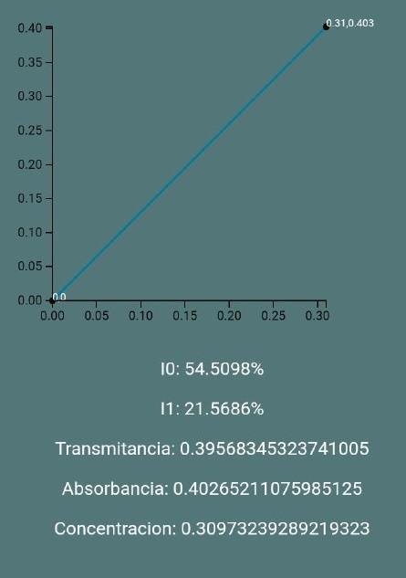
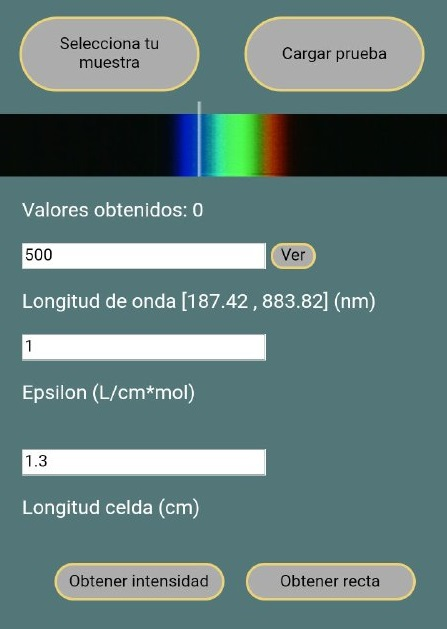
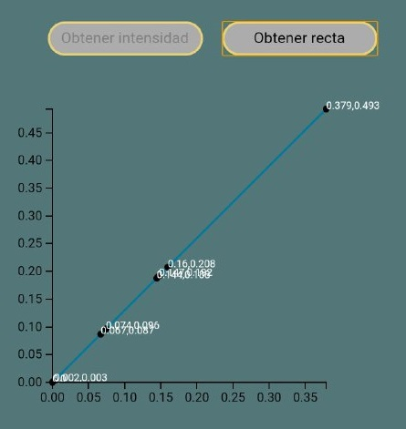
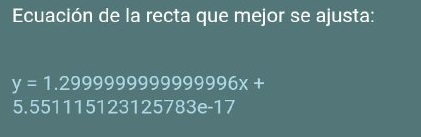
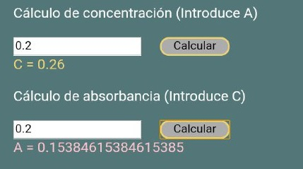

Dentro de esta opción encontrarás diversas funciones para operar con los espectros que fotografíes.
Selecciona la función de la que quieres obtener información:
En este modo puedes realizar operaciones sobre la gráfica generada con la imagen de un espectro.
Comienza abriendo tu imagen desde la librería de tu dispositivo o cargando una imagen de prueba.

Una vez veas la gráfica puedes escribir expresiones en el recuadro o seleccionar una de las posibles opciones en el menú desplegable.
Se aplicará la expresión Java Script (tal que 'R*G+B') a todos los puntos del espectro y se te mostrará gráficamente.
Las variables de las expresiones matemáticas son:
R: Rojo
G: Verde
B: Azul
A: Media

Algunas de las otras funciones que puedes aplicar aquí son:
-smooth:'x'
Suaviza la gráfica obtenida actualmente en x pixeles.

-range:'min'-'max'
Te muestra solo el rango de longitudes de onda indicado desde 'min' hasta 'max'. Ten en cuenta que esta función no te permite volver a ver longitudes de onda fuera del rango que tengas a la vista actualmente. Si quieres recuperar la vista original en el eje horizontal, carga de nuevo la imagen.

En este modo puedes cargar dos imágenes, una con la base de tu experimento y la otra con la disolución que quieras evaluar.
El objetivo de esta función es obtener parámetros interesantes sobre los espectros que evalúes, tales como la absorbancia o la concentración de la disolución.
Comienza seleccionando la imagen que hayas obtenido de fotografiar la base de tu disolución (por ejemplo, agua).
Carga después la imagen del espectro que obtengas añadiendo tu soluto a la base.
También puedes cargar imágenes de muestra con el botón "Cargar prueba".
Aparecerán diferentes recuadros para introducir los valores necesarios para la evaluación:

-Longitud de onda:
La longitud de onda a la que vas a evaluar el experimento. Puedes visualizar la longitud de onda en la que te encuentras pulsando el botón "Ver".
-Epsilon:
Constante que depende de la base que utilices. Si es agua, su valor es 1.
-Longitud celda:
Longitud de la celda en la que introduces las muestras, medida desde el punto de incidencia de la luz hasta el punto de salida, paralelamente a la base de la celda.
Una vez tengas los datos correctos pulsa "Calcular" y se te mostrará una gráfica de absorbancia frente a concentración con el punto obtenido y los datos con los que se han calculado estos valores.

En este modo puedes cargar diferentes imagenes de muestras con diferentes concentraciones para realizar una recta de calibración y poder estimar absorbancias o concentraciones de muestras de las que no tienes imagen.
Comienza cargando tu imagen con el espectro que tenga la base de tu experimento
Una vez veas tu imagen en pantalla puedes seleccionar los diferentes parámetros para la evaluación del experimento:

-Longitud de onda:
La longitud de onda a la que vas a evaluar el experimento. Puedes visualizar la longitud de onda en la que te encuentras pulsando el botón "Ver".
-Epsilon:
Constante que depende de la base que utilices. Si es agua, su valor es 1.
-Longitud celda:
Longitud de la celda en la que introduces las muestras, medida desde el punto de incidencia de la luz hasta el punto de salida, paralelamente a la base de la celda.
Se recomienda no modificar ninguno de estos valores durante el resto del experimento, puesto a que perdería utilidad.
También puedes cargar imágenes de muestra con el botón "Cargar prueba".
Una vez tengas los valores correctamente introducidos pulsa "Obtener intensidad" para generar el primer valor con el que vas a trabajar. Observarás que la aplicación solo te permite obtener una intensidad por imagen que cargas.
Cuando veas crecer el contador de valores obtenidos puedes proceder a cargar la siguiente muestra con soluto.
Continúa obteniendo valores repitiendo el proceso tantas veces como muestras tengas. Son necesarias mínimo dos muestras y con solo dos la función es semejante a la de "Espectrofotómetro con dos valores".
Cuando todas tus muestras esten cargadas pulsa "Obtener recta" y aparecerá en pantalla una gráfica de absorbancia frente a concentración en la que se te muestran todos los puntos generados con tus muestras y una recta calculada por mínimos cuadrados que se ajusta lo mejor posible a la nube de puntos.

Bajo la gráfica puedes ver la ecuación de la recta calculada e introducir valores de absorbancia para calcular concentración y viceversa.


Los valores obtenidos se muestran tanto con valor numérico como en la gráfica.